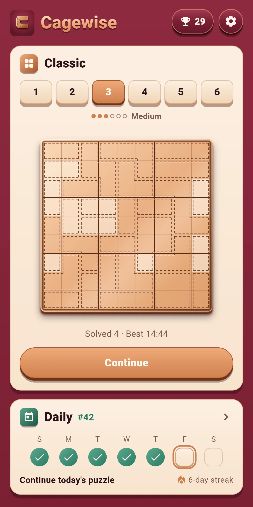
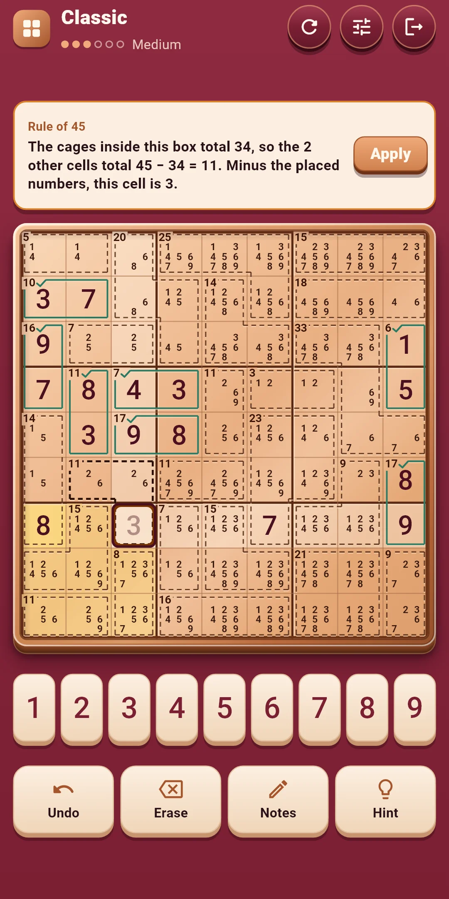
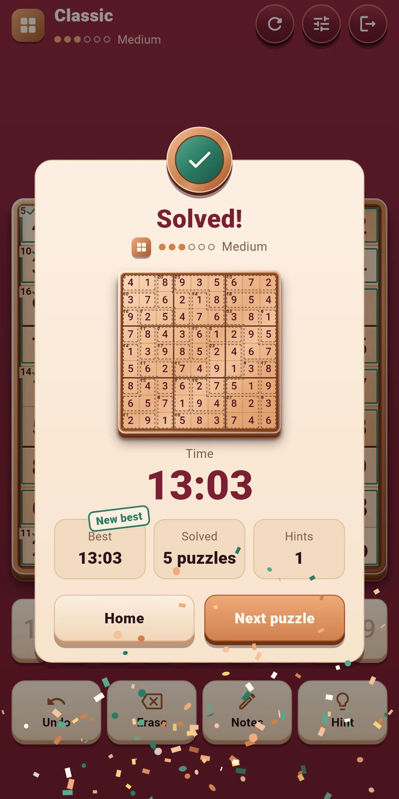
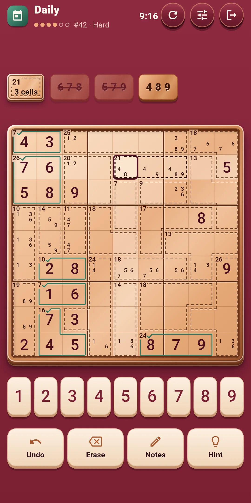
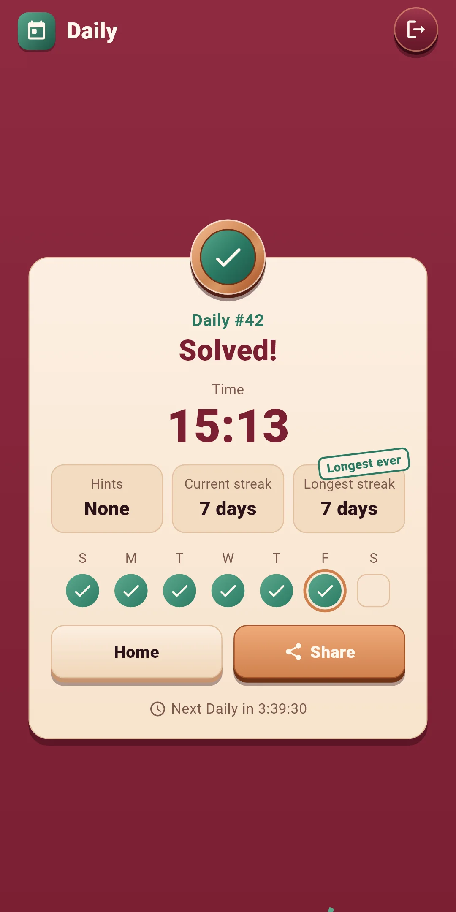
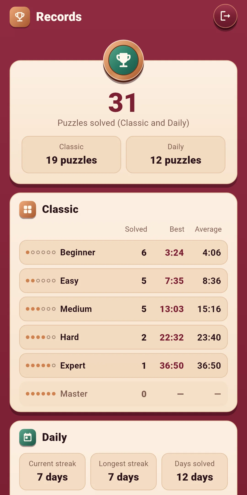
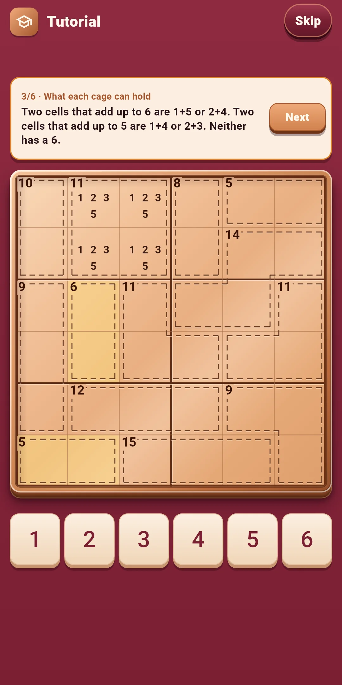

Cagewise
How to Play
How to Play







| App Name | Cagewise |
|---|---|
| Version | 1.0.1 |
| Developer | Willee Project |
| Platform | Android |
Killer sudoku is a logic puzzle: fill a 9×9 grid with 1–9 as in sudoku, using the cages (groups of cells outlined with a dotted line, each with a sum) as your clues.
Three ideas, which the tutorial shows on its 6×6 board. Hints name them Cage combinations, Hidden single and Rule of 45.
Harder ideas are shown, with their reasons, by hints (chapter 4).
The buttons at the bottom:
| Button | What it does |
|---|---|
| Undo | Undoes your last action, one at a time. Unlimited |
| Erase | Erases the number or notes in the picked cell |
| Notes | Turns note writing on or off |
| Hint | Tells you what to do next, with the reason. Unlimited (chapter 4) |
The Restart (↻) button at the right of the top bar:
| Choice | What happens |
|---|---|
| Restart this puzzle | Clears every number and note. In Classic, the time and hints start over; in Daily, the day's time and hints keep counting. Greyed out until you've placed a number or note |
| New puzzle (Classic only) | Leaves this puzzle and gives you another one of the same level. The puzzle you left doesn't count as solved |
Next to it, the Quick settings button opens a sheet for changing sounds, vibration, effects and board options (chapter 5) without leaving the game. Tap above the sheet or drag it down to close it. Exit (the door) is at the far right; your puzzle is saved automatically when you leave.
The Hint button tells you what to do next in two steps. Hints are free and unlimited.
Turn them on or off under Board & input and Assists in Settings. During a game, change them right away with Quick settings.
Cagewise Daily #12 ✅ 18:41 1 hint 🔥 5-day streak
#12 is the Daily number, followed by your time (minutes:seconds). The second line shows the hints you used ('No hints' if none) and the third your streak (shown from two days on). The first line is the same in every language. Launch day is #1 and the number goes up by one each day, so the same number means the same puzzle.
Open them with the trophy button at the top right of the home screen. It shows how many puzzles you've solved.
Open them with the gear at the top right of the home screen. There are four groups. During a game, the Quick settings button changes the first three right away.
| Item | What it does |
|---|---|
| Sound effects | Turns the sounds for placing and erasing, finishing cages, rows and boxes, and solving a puzzle on or off. When you finish rows and boxes one after another, the pitch rises one note at a time |
| Vibration | A light tap for placing or erasing, a stronger one when a cage, row or box is finished, and a long one when the puzzle is solved. Turns it on or off |
| Reduce effects | Turns all effects down at once. While it's on, the three effect buttons below are greyed out and shown as off. It also follows your device's remove-animations setting |
| Motion · Glow · Confetti | A strip of three buttons to turn each effect on or off. A check shows on the ones that are on, and pressing and holding one shows what it does. Motion is placed numbers and finished cages, Glow is finished rows, boxes and puzzles, and Confetti is when you solve a puzzle. The board never shakes |
| Item | What it does |
|---|---|
| Large numbers | Draws the numbers on the board bigger. Off at first |
| Number first | Pick a number, then tap cells to place it. Off at first; tapping a cell first is the default |
| Auto-clear notes | Placing a number clears it from related notes. On at first |
| Highlight same numbers | Highlights the picked number on the board. On at first |
| Item | What it does |
|---|---|
| Show rule conflicts | Marks repeated numbers and cages over their sum. On at first |
| Cage combination helper | Shows the number combinations for the selected cage. On at first |
| Show mistakes | Marks numbers that differ from the solution right away. Off at first |
| Item | What it does |
|---|---|
| Language | Follows your device language (the default), or pick one from the list |
| Privacy options | Opens the ad consent window again. Shown only where consent is required (such as Europe) |
| How to play | Replays the tutorial |
| About | Version, this guide (How to play), the privacy policy and open-source licenses |